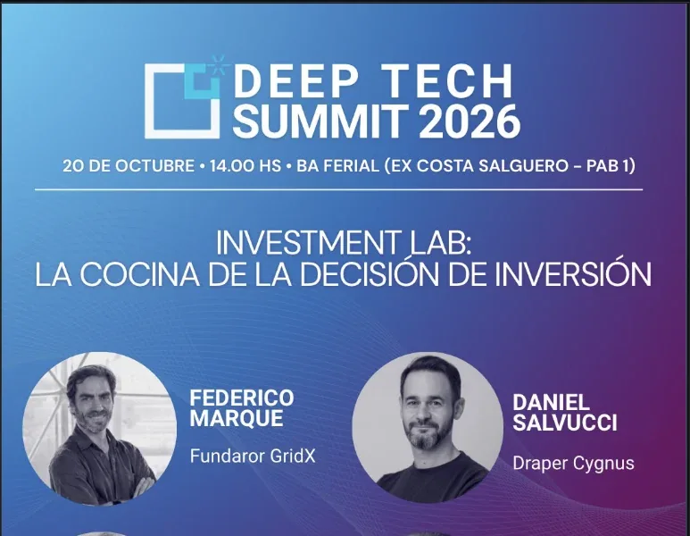
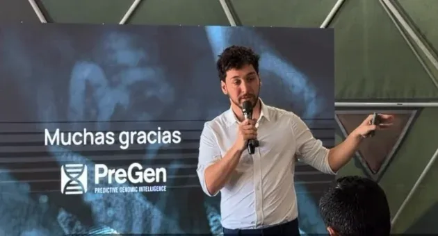
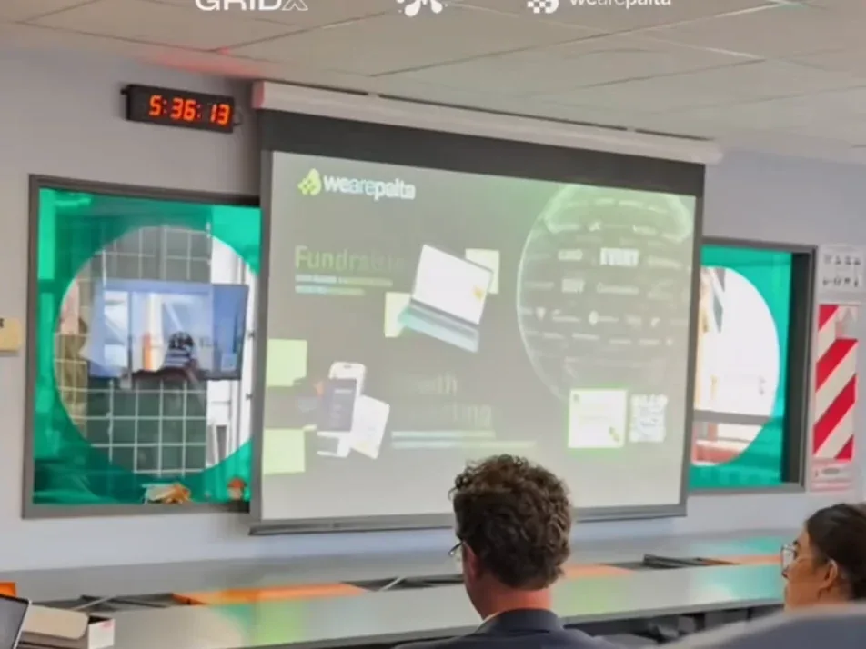
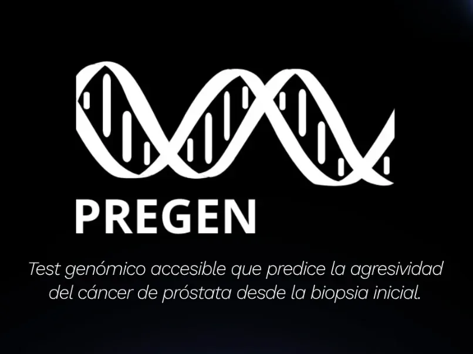
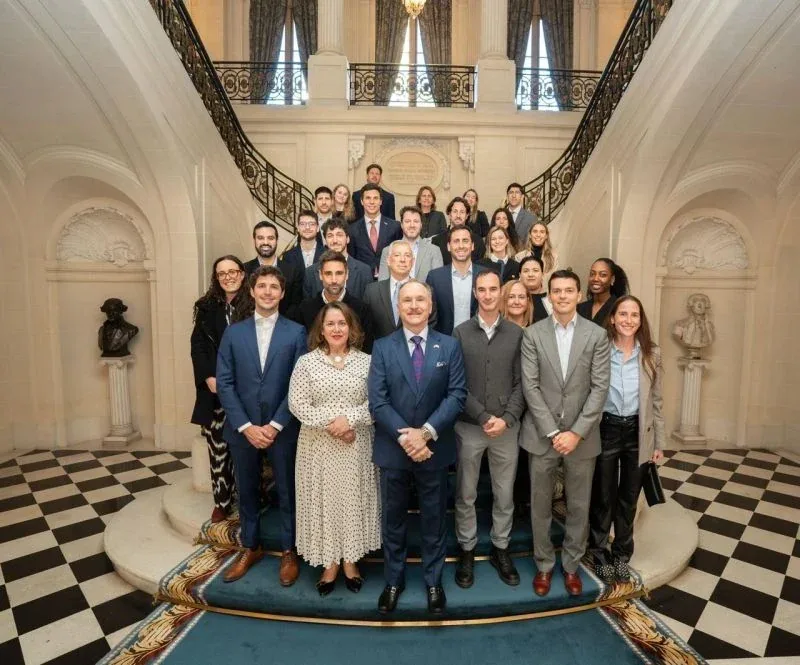
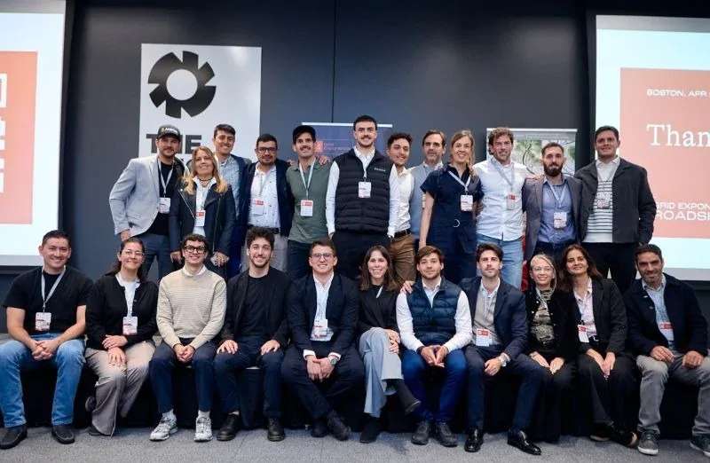

News

PreGen among the startups invited to the Deep Tech Summit 2026 Investment Lab
BA Ferial (formerly Costa Salguero), Buenos Aires · 2 p.m.
Instagram · BA Ciencia y TecnologíaView post →

PreGen pitches at AmCham’s HealthTech day at the Buenos Aires Innovation Park
AmCham member startups and companies presented health innovation projects.
Instagram · Parque de la InnovaciónView post →

Pitch at the Biotech & Agrifood Afternoon in Rosario, with GRIDX, Michroma and We are Palta
Santa Fe Business Forum · 20+ startups and investors from the region.
LinkedIn · Oliver GibsonView post →

PreGen joins the Buenos Aires Innovation Park community
Presented at the Park’s Community Meetup (2nd edition).
Instagram · Parque de la InnovaciónView post →

Meeting with U.S. Ambassador Peter Lamelas and Argentine founders at Palacio Bosch
Organized by AWS with the U.S. Embassy and AmCham Argentina.
LinkedIn · Gabriel Puppo (AWS)View post →

Pitch at The Engine (MIT) during GRIDX’s U.S. roadshow
Boston and San Francisco: Harvard Business School, Ginkgo Bioworks and MBC BioLabs.
LinkedIn · GRIDXView post →
Five Argentine startups, including PreGen, backed by Latin America’s largest biotech investment fund
GRIDX invests USD 250,000 in PreGen and four other startups. Article in Spanish.
El CronistaRead article →
Argentine researchers create an AI-based kit to diagnose prostate cancer
The work of Geraldine Gueron’s team (UBA–CONICET). Article in Spanish.
InfobaeRead article →
Precision medicine, the new approach to caring for people with cancer
Featuring Federico Cayol. Article in Spanish.
TNRead article →
“Las Recetas del Doc”: five keys to understanding head and neck cancer
With Federico Cayol. In Spanish.
Canal 9Read article →